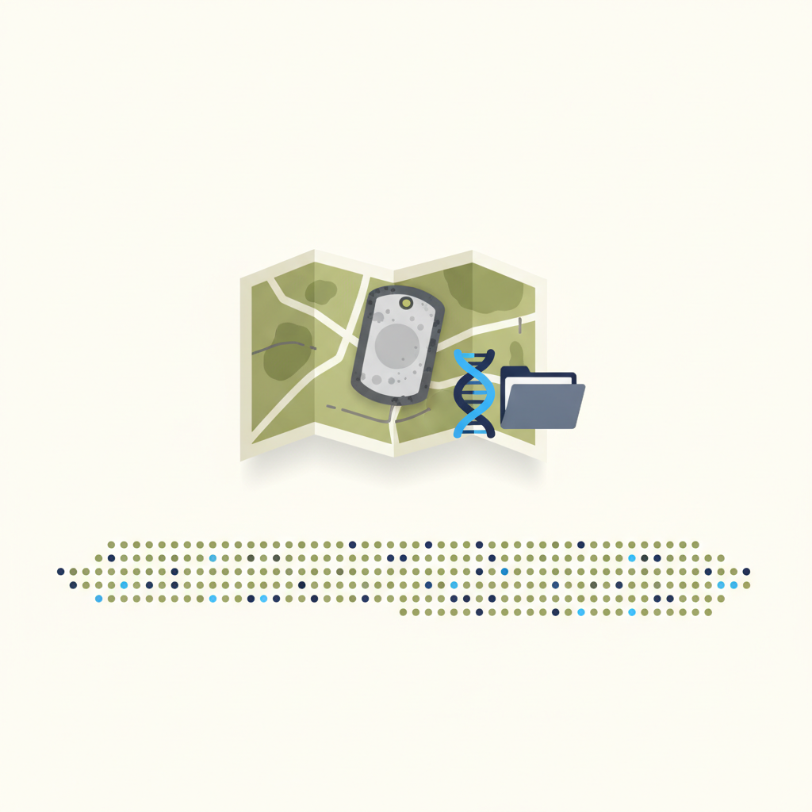
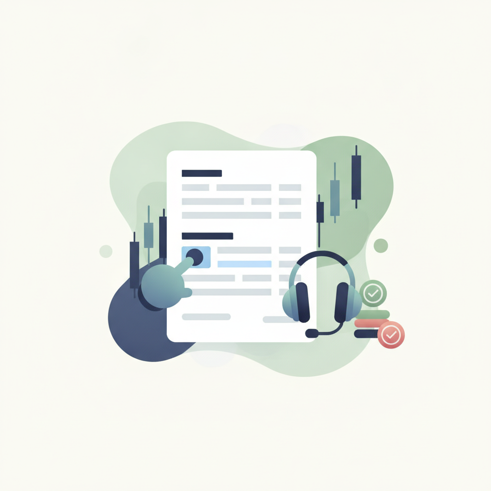
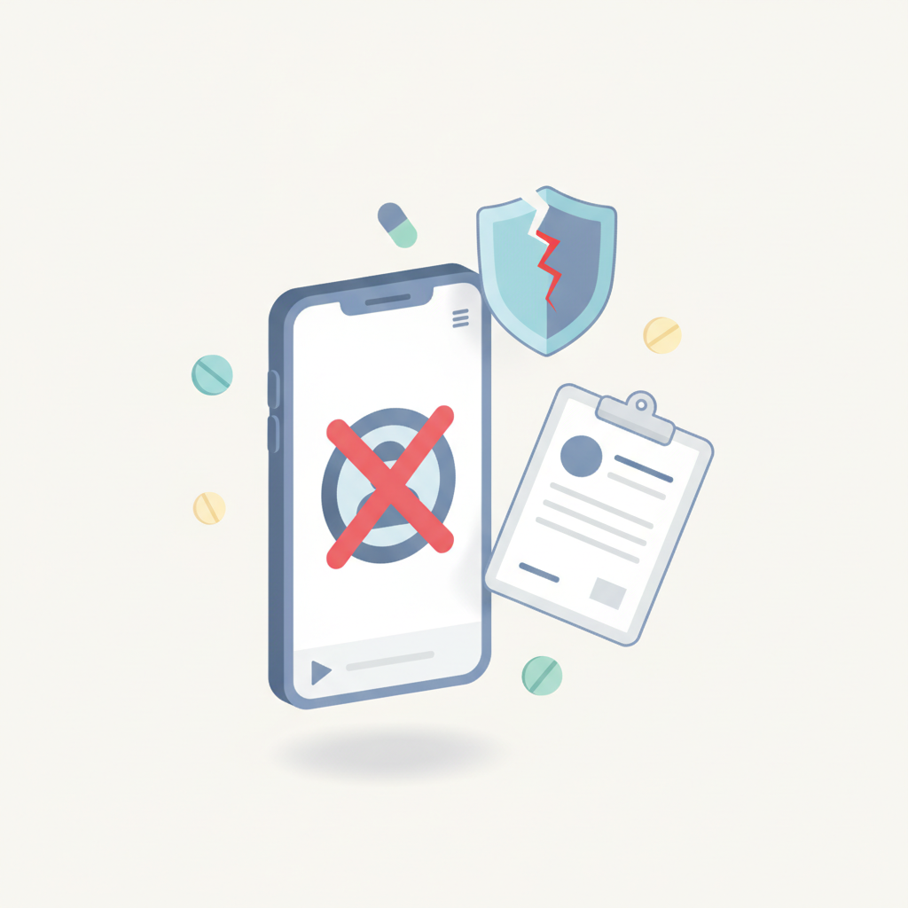
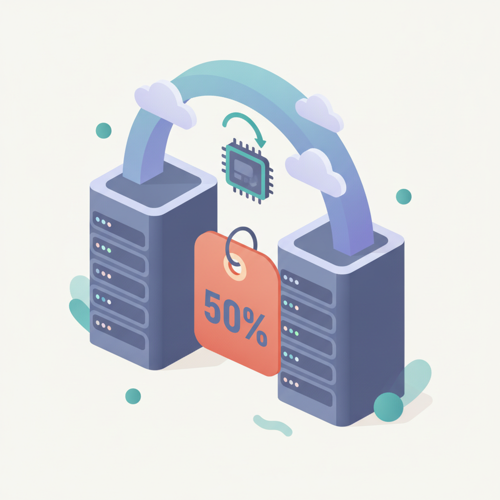
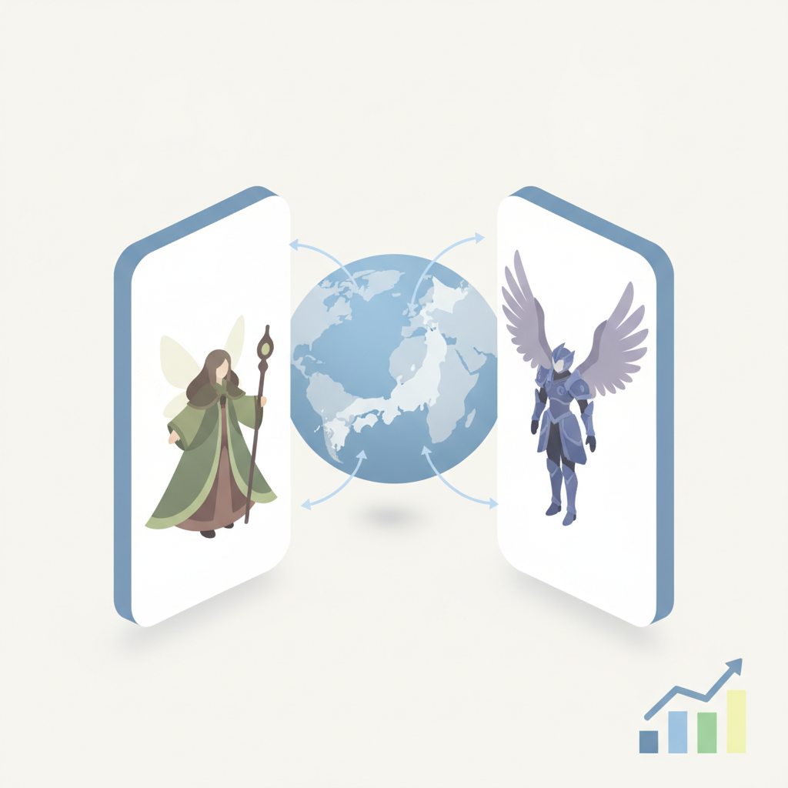
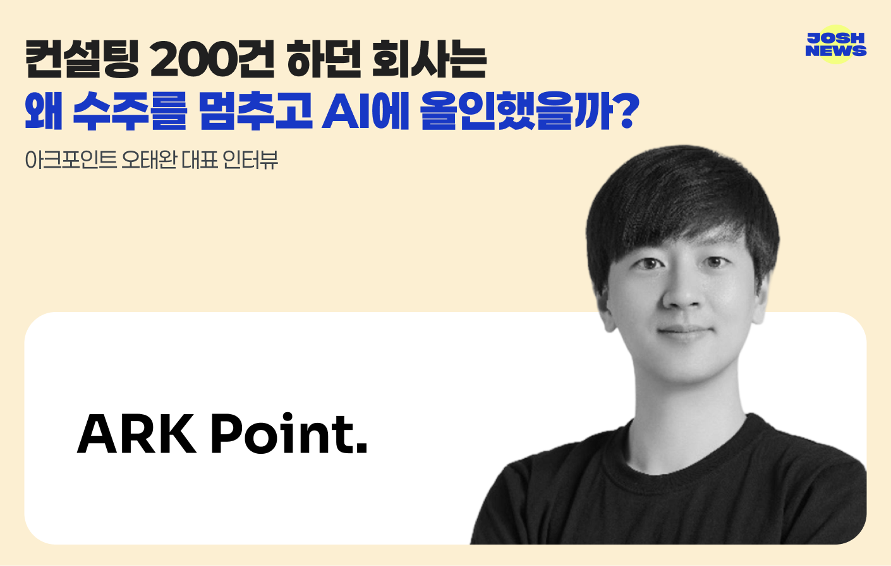

안녕하세요! 수요일 마케팅 소식 전해드립니다 😊 오늘은 빌더조쉬에서 다룬 아크포인트 이야기가 특히 인상적입니다. 컨설팅 수주가 들어오는 상황에서도 의도적으로 멈추고, 10명짜리 회사가 AI로 일하는 방식 전체를 다시 설계했다는 기록입니다. 성장하는 것처럼 보이는 구조를 스스로 끊어내고 내부를 뜯어고치는 결정은 쉽지 않은데, 그 선택의 배경과 과정이 단순한 AI 도입 사례를 넘어 조직 운영 방식에 대한 근본적인 질문을 던집니다.
오늘의 마케팅 뉴스에서는 GEO(생성형 엔진 최적화) 콘텐츠 전략을 둘러싼 논의도 주요하게 다뤄집니다. "광고는 멈추면 끝, 콘텐츠는 계속 일한다"는 메시지처럼, AI 검색이 일상화되면서 한 번 잘 만들어 둔 콘텐츠가 지속적으로 답변에 인용되는 구조가 점점 현실이 되고 있습니다. 크리테오 APAC 총괄이 강조한 '맥락'의 중요성과도 연결되는 지점입니다. 데이터의 양보다 그 안에 담긴 맥락을 얼마나 잘 설계하느냐가 에이전틱 AI 시대의 경쟁력을 가른다는 시각은, GEO 콘텐츠 전략을 짤 때도 그대로 적용됩니다.
한 주의 중반, 오늘도 좋은 인사이트 가득 챙겨가시길 바랍니다! 💡
[ 매드타임스 채성숙 기자] GEO(생성형 엔진 최적화) 콘텐츠 마케팅 그룹 엘리펀트컴퍼니(대표 김예지)가 오는 21일 서울 강남구 스페이스쉐어 삼성 리젠시홀에서 ‘2027 마케팅 세미나: AI 시대에 살아남는 브랜드 콘텐츠’를 개최한다. 이번 세미나에서는 아정당과 SK브로드밴드, 리틀리 등 다양한 규모의 기업들이 AI 검색 환경에 대응해 추진한 GEO 전략과 성과를 공유한다.챗GPT(ChatGPT)와 구글 AI 오버뷰(AI Overview) 등 생성형 AI 기반 검색 서비스가 확산하면서 브랜드의 검색 마케팅 전략도 달라지고 있다.
›
2[ 매드타임스 최영호 기자] 국방부 유해발굴감식단(이하 국유단)이 제78주년 국군의 날을 맞아 6·25전쟁 전사자들의 귀환을 위한 국민 참여형 캠페인 ‘국유단: 귀환작전(Operation Homecoming)’을 선보였다. 정전 이후 70여 년이 지났지만 아직 가족의 품으로 돌아오지 못한 12만여 명의 전사자를 기억하고, 유해 발굴과 신원 확인에 대한 국민의 관심을 높이기 위해 마련됐다.크리에이티브 에이전시 스피어서울(구 서비스플랜코리아)이 기획·제작한 이번 캠페인은 10월 1일부터 30일까지 서울 용산역 2번 출구 앞 도파민 스테
› 3"에이전틱 AI 시대의 경쟁력은 단순히 얼마나 많은 데이터를 보유하고 있느냐가 아닙니다. 다양한 커머스 데이터에 담긴 '맥락'을 얼마나 정확하게 해석하고 이를 실질적인 성과로 연결할 수 있느냐가 중요합니다"쯔웨이 로(Szi-Wei Lo) 크리테오(Criteo) 아시아태평양(APAC) 지역 총괄이 AI가 소비자의 상품 탐색과 비교, 구매 결정에 깊숙이 들어오고 있는 가운데 커머스 시장의 새로운 경쟁력으로 '맥락(Context)'을 꼽았다. 공개된 상품 설명과 리뷰 등을 넘어 실제 재고와 인기도, 반품률 등
›
4인공지능(AI)은 금융투자업 전반에서 활용 범위를 넓히고 있다. 글로벌 AI 시장은 2023년 1890억달러(약 261조원)에서 2033년 4조8000억달러(약 6624조원) 규모로 성장할 것으로 전망된다. 금융 분야는 AI 활용이 활발한 산업 중 하나로 꼽힌다. 국내에서도 금융과 AI를 접목하려는 움직임이 확대되고 있다. 자본시장연구원에 따르면 금융 분야 AI 특허 출원은 2015년 20건에서 2023년 약 380건으로 늘어나며 19배 증가했다.
›
5요즘 광고에 대한 믿음이 옛날만 못하다. 신문이나 방송이 아닌 온라인과 SNS에 넘치는 숏폼광고 이야기다. 광고가 도매금으로 한꺼번에 부정당하는 게 광고전공 교수로 못내 아쉽다. 실제 방송광고에서 의약품 광고에 의사나 약사, 전문가의 등장은 불가능하다. 뿐만아니라 병원 광고, 전문의약품 광고도 허용되지 않는다. 그러나 온라인에서는 이런 원칙이 제대로 지켜지지 않는다. 더구나 숏폼에서는 광고와 콘텐츠의 구분도 모호하고, 영상에 등장하는 모델도 현실에 존재하지 않는 의사, 교수다.지난 30년간 강단에서 광고와 마케팅을 가르치고, 건강기
›
6뉴타닉스가 외부 공급업체의 과금 모델 변경으로 토큰 비용이 급증한 사례를 계기로 AI 운영 모델을 하이브리드 방식으로 재구축하고, 기존 운영 방식 대비 비용을 50% 절감했다고 밝혔다. 서버와 그래픽처리장치(GPU)를 직접 구매하고 자체 솔루션과 에이전트 아키텍처를 활용해 불필요한 연산과 토큰 소비를 줄이는 데 초점을 맞췄다. 회사는 분산된 인프라를 통합 관리하고 개방성과 보안을 확보하는 전략을 통해 기업의 AI 운영 효율성과 비용 통제력을 높인다는 방침이다.
›
7국내 게임사가 국내에서 검증한 지식재산권(IP) 영토를 해외로 넓히고 있다. 넥슨과 엔씨가 대표적이다. 넥슨은 최근 ‘마비노기 모바일’을 일본에 선보였다. 엔씨는 아이온2 글로벌 버전을 출시했다. 두 작품은 주요 플랫폼 상위권을 차지하며 순조로운 출발 중이다. 양사의 IP 확장 전략이 초기 흥행에서 지속적인 성과로 이어질지 주목된다.
›
아크포인트 오태완 대표 인터뷰 — 들어오던 수주를 멈추고 AI로 일하는 방식을 다시 짠 10명 회사의 기록
브랜드 진단부터 지금 당장 해야 할 우선순위까지,
30분 무료 상담에서 함께 정리해드려요.
이미 수십 개 브랜드가 상담받았습니다.
내 브랜드처럼, 함께 고민하는 팀원의 마음으로 봅니다.
스타트업 대표·마케팅 담당자를 위한 30분